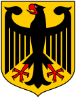

Németország egy független szövetségi állam Közép és Nyugat Európában. Területe az Alpoktól az Északi és a Balti tengerig terjed.
Történelme:
Németország Európa egyik leg sokszínűbb országa, amely többek között viharos és változatos múltjának köszönhető. A német történelem első meghatározó időszaka a Habsburgok uralkodására tehető. Rendkívül sokszínű és eseménydús időszak volt ez, miután Németország vezető hatalommá vált Európában. A következő meghatározó esemény az ország történelmében az első és második világháború volt, melyekben kiemelkedő szerepet töltött be Németország, annak ellenére, hogy mindkét háborúból vesztesként került ki. A második világháború után, 1961-től az ország kettébomlott, így létrejött Kelet (NDK) és Nyugat (NSZK) Németország. Ennek a különállásnak a jelképe volt a berlini fal, melyet 1989-ban bontottak le. 1990. október 3.-án pedig megszületett a Német Szövetségi Köztársaság. Az ország tehát 1990 óta köztársaság, hivatalos nyelve a német. Az Európai Unió egyik alapító tagja, így hivatalos pénzneme 2002 óta az euró.
Nemzeti Címere:

Története:
Amikor Nagy Károly 800-ban felújította a római császárságot a Frank Birodalom keretein belül, felvette a sast, mint a római világbirodalom szimbólumát jelképei sorába. Aacheni palotájára felvitetett egy fém, feltehetőleg arany sast, mely IV. Henrik uralkodásáig még látható volt az épületen.